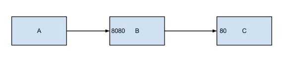

Link notes
Table of Contents
- 1. Link notes
- 1.1. TODO favicon.io 在线生成网站
- 1.2. TODO orgmode 博客配置文章
- 1.3. TODO Jinja2 模板语言
- 1.4. DONE yasnippet 创建模板学习
- 1.5. DONE emacs 中英文字体配置文章
- 1.6. TODO Jabber.el an XMPP client for Emacs
- 1.7. TODO common lisp 简体中文
- 1.8. DONE 不错的es查询语句分析
- 1.9. DONE fluentd plugins
- 1.10. DONE install virtualbox in mac
- 1.11. DONE python gevent learn
- 1.12. DONE 如何使用org-mode 添加音乐专辑
- 1.13. TODO hackthebox 邀请码
- 1.14. DONE problem-solving-with-algorithms-and-data-structure-using-python
- 1.15. TODO flask 系列
- 1.16. DONE aria2 配置
- 1.17. DONE mac 系统文件过大
- 1.18. DONE sync + bt source
- 1.19. TODO 小米路由配置aria2
- 1.20. DONE pyim 中文库和中文字体配置
- 1.21. TODO exwm 能否支持管理mpv和pdf阅读
- 1.22. DONE 端口转发
- 1.23. DONE pyim 拼音输入法
- 1.24. TODO 尾递归 DECORATOR
- 1.25. TODO emacs video playlist
- 1.26. TODO A Screencast Video About Advanced Featurs of Emacs Org Mode
- 1.27. TODO emacs learn video list
- 1.28. UNDO elfeed Emacs Web Feed Reader
- 1.29. UNDO Sacha Chua emacs news
- 1.30. DONE Using Emacs Series
- 1.31. DONE Swaroop, The Dreamer
- 1.32. DONE Sams Teach Yourself Emacs in 24 Hours
- 1.33. DONE emacs python ide config
- 1.34. DONE approach for structuring a Flask RESTPlus web application
- 1.35. TODO python黑魔法—上下文管理器 contextor
- 1.36. DONE python 进阶
- 1.37. DONE telegram Proxy sponsor channel set
- 1.38. TODO flask 源码解读
- 1.39. UNDO 添加github搜索快捷键辅助github pomodoro task
- 1.40. DONE Python 博客文章知识点不错
- 1.41. DONE python pomodoro task
- 1.42. DONE github pomodoro task
- 1.43. DONE 抽时间研究下这位老大爷的emacs博客
- 1.44. DONE 研究下人生发财靠康波 理论
- 1.45. DONE 豆瓣评分9.0以上专辑聆听
- 1.46. DONE spacemacs rocks git config
1 Link notes
1.1 TODO favicon.io 在线生成网站
https://favicon.io/favicon-generator/
SCHEDULED:
1.2 TODO orgmode 博客配置文章
1.3 TODO Jinja2 模板语言
https://www.kancloud.cn/manual/jinja2/70423
SCHEDULED:
1.4 DONE yasnippet 创建模板学习
- State "DONE" from "TODO"
https://github.com/joaotavora/yasnippet
SCHEDULED:
yasnippet official snippet collections
1.5 DONE emacs 中英文字体配置文章
- State "DONE" from "TODO"
http://zhuoqiang.me/torture-emacs.html
SCHEDULED:
1.6 TODO Jabber.el an XMPP client for Emacs
1.7 TODO common lisp 简体中文
1.8 DONE 不错的es查询语句分析
- State "DONE" from "TODO"
https://www.cnblogs.com/elaron/p/7699623.html
SCHEDULED:
1.9 DONE fluentd plugins
- State "DONE" from "TODO"
https://www.fluentd.org/plugins
fluentd regular expression editor
http://fluentular.herokuapp.com/
^\[(?<date>[^ ]* [^\,]*)\]\[(?<log_level>.*)\]\[(?<client_ip>.*)\]\[(?<auth_key>.*)\]\[(?<uri>.*)\]\[(?<http_method>.*)\]\[(?<query_data>.*)\]\[(?<file>[^\:]*)\: (?<line>\d+)\: (?<func>\S+)\] - \[(?<msg>.*)\]$ [2019-01-15 19:03:28 +0800][INFO][ client_ip][auth_key][uri][http_method][query_data][/usr/lib/python2.7//_internal.py: 88: _log] - [172.24.67.146 - - [15/Jan/2019 19:03:28] "POST //1.1" 200 -] format='[%(asctime)s][%(levelname)s]' + '[ client_ip][auth_key][uri][http_method][query_data]' + '[%(pathname)s: %(lineno)s: %(funcName)s] - [%(message)s]',
debug
vim /opt/td-agent/embedded/lib/ruby/gems/2.4.0/gems/fluent-plugin-kafka-0.7.4/lib/fluent/plugin/out_kafka_buffered.rb334的trace 改成warn,来查看匹配日志
SCHEDULED:
1.10 DONE install virtualbox in mac
- State "DONE" from "TODO"
https://www.virtualbox.org/wiki/Downloads
SCHEDULED:
support usb2.0 and usb3.0
VirtualBox 6.0.0 Oracle VM VirtualBox Extension Pack
install winxp
iso download : https://msdn.itellyou.cn/
MRX3F-47B9T-2487J-KWKMF-RPWBY
1.11 DONE python gevent learn
- State "DONE" from "TODO"
http://sdiehl.github.io/gevent-tutorial/
SCHEDULED:
1.12 DONE 如何使用org-mode 添加音乐专辑
- State "DONE" from "TODO"
还是需要通过channel分享,最快捷的消息,才是最有价值的消息
https://orgmode.org/manual/Property-syntax.html
SCHEDULED:
1.13 TODO hackthebox 邀请码
SCHEDULED:
1.14 DONE problem-solving-with-algorithms-and-data-structure-using-python
1.15 TODO flask 系列
1.16 DONE aria2 配置
- State "DONE" from "TODO"
https://github.com/ngosang/trackerslist
https://aria2.github.io/manual/en/html/aria2c.html#options
SCHEDULED:
~/.aria2 创建文件
aria2.log （日志，空文件就行）
aria2.session （下载历史，空文件就行）
aria2.conf （配置文件）
HideRun.vbs （隐藏cmd窗口运行用到的）
aria2c --enable-rpc --rpc-listen-alldht
找个热门种子(千万建议是种子，而不是磁力链接)，然后下一波，挂着做种，过几个小时后退出Aria2， 或者等Aria2会话自动保存，你会发现dht.dat从空文件变成有数据了
1.17 DONE mac 系统文件过大
- State "DONE" from "TODO"
https://blog.csdn.net/hu434587115/article/details/72874811
SCHEDULED:
清理应用缓存文件（8G）
rm -rf ~/Library/Caches/*
1.18 DONE sync + bt source
- State "DONE" from "TODO"
SCHEDULED:
1.19 TODO 小米路由配置aria2
https://www.jianshu.com/p/a23330cf8ee8
SCHEDULED:
1.20 DONE pyim 中文库和中文字体配置
- State "DONE" from "TODO"
https://github.com/redguardtoo/emacs.d#saveload-windows-layout
下载pyim个人字典后 c-\\ 来回切换输入中英文真的很方便
唯一需要做的就是记住pyim的快捷键
SCHEDULED:
1.21 TODO exwm 能否支持管理mpv和pdf阅读
https://wiki.archlinux.org/index.php/EXWM
SCHEDULED:
1.22 DONE 端口转发
- State "DONE" from "TODO"
#+BEGINQUOTE https://mp.weixin.qq.com/s/8HeeDC5x5xozElN8GzQLLw

三种端口转发的方法,socat,iptables,ssh
socat是一个很强大的socket工具，这里我们拿来做端口转向，需要在B机器上运行：
socat -d -d TCP4-LISTEN:8080,reuseaddr,fork,su=nobody TCP4:c_ip:80
这样，我们通过A访问B的8080端口的时候，就会访问到C的80端口了，如图上半部分所示
iptables是大名鼎鼎的linux下的防火墙，也可以做端口转向，在B机器上运行：
iptables -t nat -A PREROUTING -d b_ip -p tcp --dport 80 -j DNAT --to-destination c_ip:8080
iptables -t nat -A POSTROUTING -d c_ip -p tcp --dport 8080 -j SNAT --to--source b_ip
ssh就不多说了，对应的场景是图上最下面的部分，需要在B上ssh登录C，中间创建一个转发隧道：
ssh -gfNL 8080:d_ip:80 root@c_ip
1.23 DONE pyim 拼音输入法
- State "DONE" from "TODO"
https://github.com/tumashu/pyim#org4a82653
SCHEDULED:
C-n 或 M-n 或 + 或 . 向下翻页
C-p 或 M-p 或 - 或 , 向上翻页
C-f 选择下一个备选词
C-b 选择上一个备选词
SPC 确定输入
RET 或 C-m 字母上屏
C-c 取消输入
C-g 取消输入并保留已输入的中文
TAB 模糊音调整
DEL 或 BACKSPACE 删除最后一个字符
C-DEL 或 C-BACKSPACE 删除最后一个拼音
M-DEL 或 M-BACKSPACE 删除最后一个拼音
1.24 TODO 尾递归 DECORATOR
1.25 TODO emacs video playlist
https://www.zhihu.com/question/20239473
SCHEDULED:
1.26 TODO A Screencast Video About Advanced Featurs of Emacs Org Mode
1.27 TODO emacs learn video list
http://emacslife.com/videos.html
SCHEDULED:
1.28 UNDO elfeed Emacs Web Feed Reader
- State "UNDO" from "TODO"
目前没有rss强烈需求
https://github.com/skeeto/elfeed
SCHEDULED:
1.29 UNDO Sacha Chua emacs news
- State "UNDO" from "TODO"
SCHEDULED:
1.30 DONE Using Emacs Series
- State "DONE" from "TODO"
https://cestlaz.github.io/stories/emacs/
SCHEDULED:
1.31 DONE Swaroop, The Dreamer
- State "DONE" from "TODO"
SCHEDULED:
1.32 DONE Sams Teach Yourself Emacs in 24 Hours
- State "DONE" from "TODO"
http://www.emacs.uniyar.ac.ru/doc/em24h/
SCHEDULED:
1.33 DONE emacs python ide config
- State "DONE" from "TODO"
https://steelkiwi.com/blog/emacs-configuration-working-python/
https://github.com/Nanue1/dot-emacs
SCHEDULED:
anaconda-mode 是 spacemacs 使用的跳转module
https://kevinjiang.info/2018/03/20/Emacs下Python开发配置/
https://github.com/proofit404/anaconda-mode
M-. anaconda-mode-find-definitions 跳转到定义处。如果不使用anaconda-mode，则是绑定到elpy的elpy-goto-definition，elpy有时候工作得不是很好
M-? anaconda-mode-show-doc 在另外一个window中显示光标当前所在位置符号的文档
M-, anaconda-mode-find-assignments 跳转到变量赋值位置
M-r anaconda-mode-find-references 在另外一个window中显示光标当前所在位置变量的所有引用
M-* anaconda-mode-go-back 返回上一个位置
1.34 DONE approach for structuring a Flask RESTPlus web application
- State "DONE" from "TODO"
SCHEDULED:
1.35 TODO python黑魔法—上下文管理器 contextor
https://www.jianshu.com/p/d53449f9e7e0
SCHEDULED:
1.36 DONE python 进阶
- State "DONE" from "TODO"
- State "DONE" from "TODO"
https://eastlakeside.gitbooks.io/interpy-zh/content/context_managers/handle_exception.html
1.37 DONE telegram Proxy sponsor channel set
- State "DONE" from "TODO"
https://github.com/p1ratrulezzz/MTProxy-1
https://hub.docker.com/r/telegrammessenger/proxy/
作者配置mtpro代理思路不错
echo "ulimit -SHn 1048576" >> /etc/rc.localsock连接过多导致mtpro代理无法正常转发，可以调大文件句柄
Proxy sponsor channel set :
利用Telegram bot @MTProxybot,按照提示说明一步一步配置,等待一小时即可
newproxy
myproxies
edit promotion个人搭建公益代理:
https://t.me/proxy?server=139.180.192.255&port=443&secret=62b1466f8b1860fd9d2c80f5585971c6DEADLINE:
1.38 TODO flask 源码解读
https://amberno1111.github.io/tags/Flask/
SCHEDULED:
1.39 UNDO 添加github搜索快捷键辅助github pomodoro task
- State "UNDO" from "TODO"
https://github.com/topics/flask
DEADLINE:
1.40 DONE Python 博客文章知识点不错
- State "DONE" from "TODO"
- State "DONE" from "TODO"
1.41 DONE python pomodoro task
- State "DONE" from "TODO"
- State "DONE" from "TODO"
- State "DONE" from "TODO"
- State "TODO" from "DONE"
- State "DONE" from "TODO"
- State "DONE" from "TODO"
https://zhuanlan.zhihu.com/p/32818342 https://zhuanlan.zhihu.com/p/42628522
1.42 DONE github pomodoro task
- State "DONE" from "TODO"
- State "DONE" from "TODO"
- State "DONE" from "TODO"
- State "DONE" from "TODO"
1.43 DONE 抽时间研究下这位老大爷的emacs博客
- State "DONE" from "TODO"
about 的联系方式写的不错 irc
1.44 DONE 研究下人生发财靠康波 理论
State "DONE" from "TODO"
https://zhuanlan.zhihu.com/p/30688238 康德拉季耶夫周期：1926年俄国经济学家康德拉季耶夫提出的一种为期50-60年的经济周期。
踏准经济周期才能更容易逆袭，老铁你听懂了吗？
五、对于未来投资的建议
1、在未来的投资目标：
未来五年是资产的下降期，这个时候大家尽量持有流动性好的资产，而不要持有流动性不好的资产。资产要求： 第一目标是保值，第二是流动性。这两个是未来五年大家在投资时应该注意的一个最核心的问题。
2、现状预测：
2019年是中国经济的最差年景，在另一套理论中也是可以解释的。所以美元现在还没有到达这波牛市的高点，这 波高点应该在明年中期。明年上半年美国也会出现滞胀，那时候美联储会连续加息，流动性会出问题，美国经济 掉头往下，通胀掉头往下，就会出现经济的调整。这就是2017年的中期可以看到的。
3、风险控制：
2018年到2019年是康波周期的万劫不复之年，60年当中的最差阶段，所以一定要控制18、19年的风险。在此之前 做好充分的现金准备，现在可以发债，五年之后还有现金。
4、人生规划：2016年至2017年卖掉投资性房地产和新三板股权，买进黄金，休假两年，2019年重新开始。
五色土认为：在休假的两年中，人可以休息，资金可以继续赚取不动产抵押理财利息。
1.45 DONE 豆瓣评分9.0以上专辑聆听
- State "DONE" from "TODO"
- State "DONE" from "TODO"
Inside Llewyn Davis- Hang Me, Oh Hang Me - By Oscar Isaac
- Fare Thee Well (Dink's Song) - By Marcus Mumford & Oscar Isaac
- The Last Thing on My Mind - By Stark Sands With Punch Brothers
- Five Hundred Miles - By Justin Timberlake, Carey Mulligan & Stark Sands
- Please Mr. Kennedy - By Justin Timberlake, Oscar Isaac & Adam Driver
- Green, Green Rocky Road - By Oscar Isaac
- The Death of Queen Jane - By Oscar Isaac
- The Roving Gambler (With The Down Hill Strugglers) - By John Cohen
- The Shoals of Herring (With Punch Brothers) - By Oscar Isaac
- The Auld Triangle - By Chris Thile, Chris Eldridge, Marcus Mumford, Justin Timberlake & Gabe Witcher
- The Storms Are on the Ocean - By Nancy Blake
- Fare Thee Well (Dink's Song) - By Oscar Isaac
- Farewell (unreleased studio version) - By Bob Dylan
- Green, Green Rocky Road - By Dave Van Ronk
SCHEDULED:
:LASTREPEAT:
State "DONE" from "TODO"
专辑：我去2000年曲目
- NEW BOY
- 妈妈，我..
- 在希望的田野上
- 那些花儿
- 我去2000年
- 旅途
- 别，千万别
- 白桦树
- 活着
- 召唤
- 九月
- 火车开往冬天
https://www.douban.com/doulist/241262/?start=0&sort=seq&playable=0&sub_type=
1.46 DONE spacemacs rocks git config
CLOSED: DEADLINE: SCHEDULED:
- State "DONE" from "TODO"
zilongshanren 配置前半部分不定义hacking enacs 1-7 都仔细看过了，很多配置和使用emacs的细节很受用，*推荐*https://github.com/zilongshanren/emacs.d/blob/develop/lisp/init-org.el